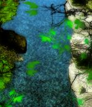

- Welcome to Touhou Wiki!
- Please register to edit. For assistance, check in with our Discord server or IRC channel.
Untrodden Valley
Untrodden Valley mito̞ː no̞ ke̞ːko̞kɯᵝ | |
|---|---|
|
 The Untrodden Valley in Impossible Spell Card
| |
| Location |
Base of the Youkai Mountain |
| Residents | |
Appearances | |
| Official Games | |
| |
| Print Works | |
| |
The Untrodden Valley (未踏の渓谷 Mitou no Keikoku) is a valley located at the very base of the Youkai Mountain through which a river running from the Waterfall of Nine Heavens courses. The kappa's hideout, the home of the kappa as mentioned in Wild and Horned Hermit, lies somewhere on land in this area.[1]
Appearances[edit]
- Mountain of Faith
The valley was introduced as the 3rd stage scenario of Mountain of Faith. It was here where the heroine encountered Nitori Kawashiro, who didn't want humans going up the Youkai Mountain.
- Double Spoiler
The valley appears on stage 4 of Double Spoiler, where Aya Shameimaru and Hatate Himekaidou encounters Nitori Kawashiro and Momiji Inubashiri to try and take photos of their danmaku. There are 7 scenes in this stage.
- Wild and Horned Hermit
During the events of the fourth chapter of Wild and Horned Hermit, the kappa living in the valley were approached by the members of the Moriya Shrine with the idea of engineering a dam. However, in their impatience and eagerness, the kappa caused a landslide and created a natural dam, blocking the river and risking a flood. Kanako Yasaka promptly handled the problem, and within no time the kappa began work on building a mechanized dam. It proved to be a fruitless endeavor however, as kappa do not work well in teams, and the project was cancelled.
- Impossible Spell Card
The valley appears on the sixth day of Impossible Spell Card, where Seija Kijin finds herself in the valley and carries on defending herself from other youkai who are trying to capture her. On Scene 1, she is confronted by Mamizou Futatsuiwa, who tells her that the tengu are reporting her to stronger humans and youkai, but also aids her to realise that she can use two items at once and has a quick duel with her. After, she'll fight against Aya Shameimaru, Hatate Himekaidou, Momiji Inubashiri and Nitori Kawashiro as they try to capture her with their "impossible" spell cards. There are 8 scenes total in the day. Even after Seija left the area, the tengu indeed spreaded rumors about her actions, making more people going after her. The previous day was located at the Skies of Gensokyo, whilst the next day is located at the Netherworld.
Gallery[edit]
The valley in Mountain of Faith